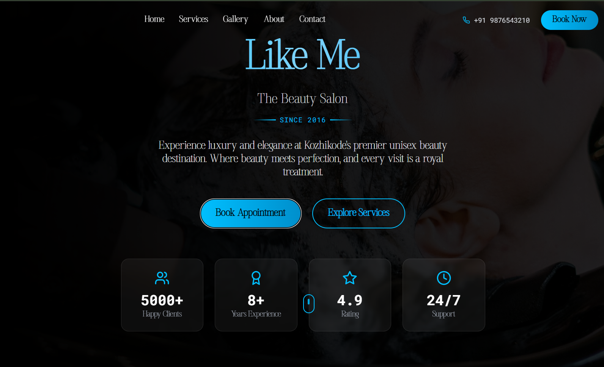

Like Me Beauty Hub
A responsive salon website with service sections, gallery, testimonials, and a multi-step booking flow.
Project details
Developed a responsive web application for Like Me Family Beauty Hub, a unisex beauty salon based in Kozhikode, currently deployed on Vercel for live preview. Built using React, TypeScript, Tailwind CSS, and Node.js, the application delivers a modern and scalable solution with a strong focus on performance and user experience. Designed an engaging UI featuring an animated hero section, services showcase, image gallery, testimonials carousel, and a multi-step booking system. Implemented a Node.js and Express backend with RESTful APIs to handle bookings and contact form submissions, along with Nodemailer integration for automated email confirmations. Ensured SEO optimization, accessibility compliance, and a mobile-first responsive design.